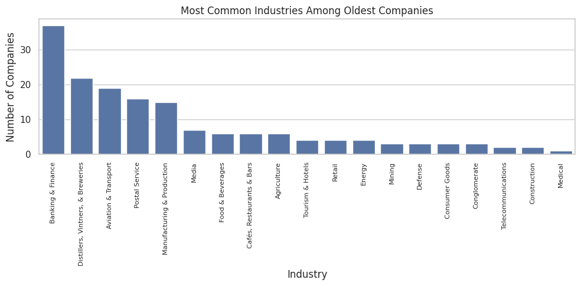
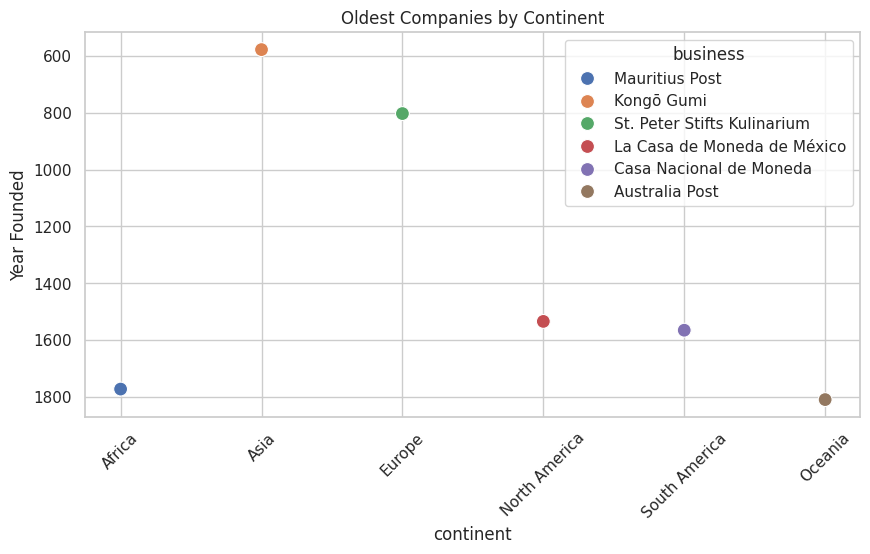

A SQL & Python Data Storytelling Project
This project explores the longevity of historic businesses around the world using data from BusinessFinancing.co.uk. It showcases trends across industries, continents, and centuries using SQL queries and data visualization in Python.
Timeline showing the oldest and newest founding years in the dataset.
Bar chart highlighting the most common industries among the oldest companies.
Scatterplot of the oldest known businesses on each continent, color-coded by business name.
Identifying the oldest company and its industry:
SELECT b.business, b.year_founded, c.category
FROM businesses b
JOIN categories c ON b.category_code = c.category_code
ORDER BY b.year_founded ASC
LIMIT 1;Languages: Python, SQL
Libraries: Pandas, Seaborn, Matplotlib, SQLite3
Platform: Google Colab
View GitHub Repository | Open Colab Notebook | Download Project Report (PDF)